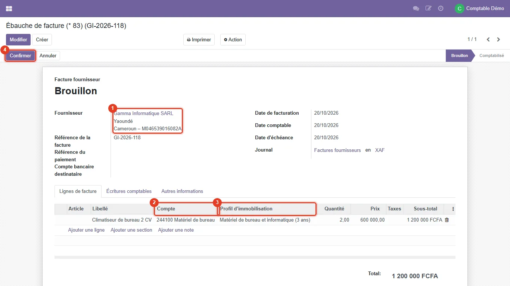

Objectif. Créer la fiche du bien directement depuis la facture fournisseur.
Où dans Odoo 15Facturation › Fournisseurs › Factures

Ce que vous faites
- Saisissez la facture fournisseur (1) comme d'habitude.
- Sur la ligne, mettez le compte d'immobilisation (2), par exemple 244100.
- Choisissez le profil d'immobilisation (3) : Odoo créera la fiche du bien.
- Cliquez sur Confirmer (4) : la fiche apparaît dans Immobilisations.
À vérifier avant de continuer
0 / 2À éviter.
- Ne passez pas un bien durable en charges (classe 6).
Exercice sur la base de test
Saisissez l'achat de deux climatiseurs et retrouvez leur fiche.